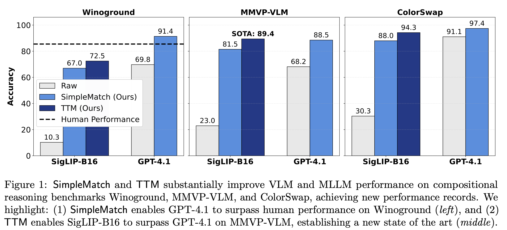
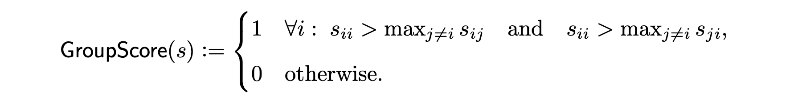
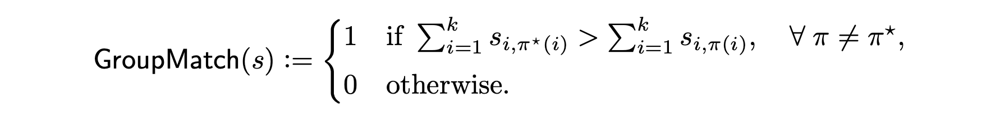
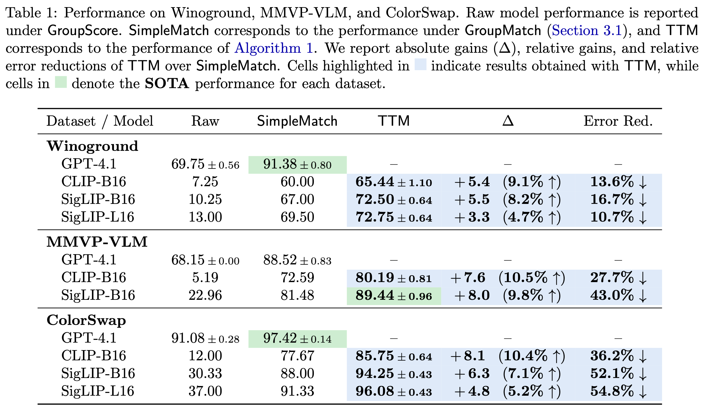
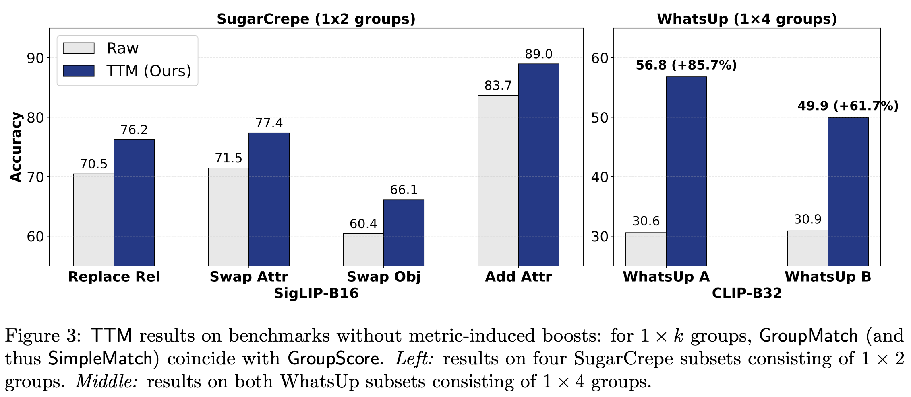
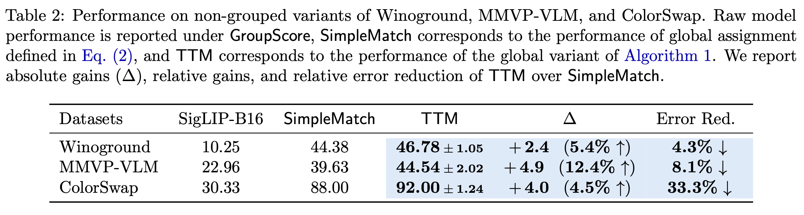

Yinglun
Zhu, Jiancheng Zhang, Fuzhi Tang
University of California,
Riverside
October 28, 2025 • 8 min
read
Paper |
Code
Correspondence:
yzhu@ucr.edu

Modern multimodal models often appear to perform no better than random guessing on compositional reasoning tasks. We revisit this puzzle and find that part of the limitation arises from overly rigid evaluation metrics that systematically underestimate model capability. We introduce a new GroupMatch metric that reveals hidden capability—enabling GPT-4.1 to surpass human performance on Winoground. Building on this insight, we propose Test-Time Matching (TTM), an iterative, self-improving algorithm that further boosts model performance without external supervision. TTM enables SigLIP-B16, a model with only 0.2B parameters, to outperform GPT-4.1 on MMVP-VLM, establishing a new state of the art.
Compositional reasoning provides a stringent test of frontier AI models, assessing their ability to combine primitive elements—such as objects, attributes, and relations—to interpret or reason about novel configurations. Recent benchmarks evaluate this capability by organizing examples into small groups of images and captions that differ in subtle yet systematic ways. For example, Winoground consists of \(2 \times 2\) groups where both captions contain the same words but in different orders, such that each caption correctly describes only one of the two images.
Despite their broad capabilities, both contrastive vision-language models (VLMs) and multimodal large language models (MLLMs) have been reported to perform at or below random guessing on these benchmarks. On Winoground, even frontier AI models still trail behind the estimated human performance of 85.5, with the previous state of the art reaching only 58.75—achieved through scaffolding and prompt tuning GPT-4V.
We find that part of the difficulty arises from the metric itself. The widely used1 GroupScore metric is extremely strict: it requires each image to align with its correct caption and each caption with its correct image, without enforcing global consistency across the group. Any collision in assignment results in a score of 0. Suppose the ground-truth pairings are \(\{(I_i, C_i)\}_{i=1}^k\). Let \(s \in {\mathbb R}^{k \times k}\) denote the similarity matrix where \(s_{ij} := s(I_i, C_j)\) represents the similarity score between image \(I_i\) and caption \(C_j\). The GroupScore is then computed through separate row-wise and column-wise checks:  With random scores, the success rate for a \(k\times k\) group is \(\frac{(k-1)!}{(2k-1)!}\)—only 1/6 when \(k=2\).
To address this, we introduce a new GroupMatch score, which evaluates the best overall matching instead of isolated pairwise comparisons. GroupMatch considers all \(k!\) possible bijective matchings \(\pi\) and selects the most likely one. Let \(\pi^\star: i \mapsto i\) denote the ground-truth matching. The GroupMatch score is defined as:  The GroupMatch metric increases the random-guess success probability to \(\frac{1}{k!}\) (for \(2\times2\) groups, from 1/6 to 1/2).
Crucially, if the correct matching is identified under GroupMatch, simply overfitting to that matching at test time guarantees a perfect GroupScore. This reveals an arbitrage opportunity—we can improve model performance under the original metric through a simple two-step SimpleMatch procedure:
As shown in Fig. 1 above, SimpleMatch reveals substantial hidden capability: it enables SigLIP-B16 to surpass all previous results and GPT-4.1 to yield the first result surpassing human performance on Winoground.2
To further improve model performance, we introduce Test-Time Matching (TTM)—an iterative, self-improving algorithm that bootstraps performance without external supervision.
Each iteration of TTM proceeds as follows:
Two key components make TTM effective: (i) GroupMatch-based pseudo-labels, which provide stronger supervision than GroupScore by leveraging group structures, and (ii) a decaying threshold schedule, which allows the model to first learn from high-precision pseudo-labels before gradually expanding coverage over the test set.
Our TTM algorithm is a form of test-time training, drawing inspiration from self-training, semi-supervised learning, and active learning.

As shown in Table 1, TTM consistently improves over SimpleMatch across datasets and models—achieving up to 10.5% relative gains and 54.8% relative error reduction. Remarkably, TTM lifts SigLIP-L16 to GPT-4.1’s level on ColorSwap and enables SigLIP-B16, a model with only 0.2B parameters, to surpass GPT-4.1 on MMVP-VLM, establishing a new state of the art.
While results above are obtained on compositional benchmarks with \(k \times k\) groups, TTM generalizes to rectangular groups and non-grouped settings.
TTM improves models without metric-induced boosts. For \(1 \times k\) groups, GroupMatch coincides with GroupScore, so metric changes alone bring no benefit. Even so, TTM consistently delivers substantial test-time improvements on SugarCrepe and WhatsUp datasets. The gains are especially striking on the WhatsUp datasets, where performance improves by up to 85.7%, turning previously challenging tasks into tractable ones.

TTM improves models without group structures. TTM can be extended to datasets without predefined groups by treating the entire dataset as a global assignment problem between all images and captions—solved efficiently in polynomial time. Flattening Winoground, MMVP-VLM, and ColorSwap into ungrouped sets, the global variant of TTM still improves performance, achieving up to 33.3% relative error reduction.

We revisit the long-standing puzzle of compositional reasoning, showing that much of the apparent failure of multimodal models arises from overly rigid evaluation metrics that systematically underestimate model capability. Our proposed GroupMatch metric and Test-Time Matching (TTM) algorithm reveal that substantial compositional reasoning capability already exists within current models—it simply needs to be unlocked at test time with the right methods. Experiments across 16 dataset variants spanning diverse setups demonstrate the robustness and effectiveness of TTM. For more details, please see our paper.
Moving forward, we highlight two promising directions:
Rethinking model evaluation. The same model can appear drastically different under different metrics—highlighting the need for more robust and reliable evaluation protocols.
Extending TTM beyond compositional reasoning. While developed in the context of compositional reasoning, the core principle of TTM—iterative, matching-based self-training at test time—is general. Exploring it in broader multimodal or language-only settings may open new directions in test-time adaptation and self-improving AI.
If you find this work useful, please consider citing:
@article{zhu2025test,
title={Test-Time Matching: Unlocking Compositional Reasoning in Multimodal Models},
author={Zhu, Yinglun and Zhang, Jiancheng and Tang, Fuzhi},
journal={arXiv preprint arXiv:2510.07632},
year={2025}
}The GroupScore metric has been widely adopted in compositional reasoning benchmarks; as of October 2025, both Winoground and MMVP-VLM have received over 500 citations, reflecting their broad use in evaluating multimodal reasoning.↩︎
We use GPT-4.1-2025-04-14, the latest GPT model that provides log probabilities, enabling more accurate computation of similarities scores via VQAScore. As of October 2025, GPT-5 does not support log probability outputs.↩︎